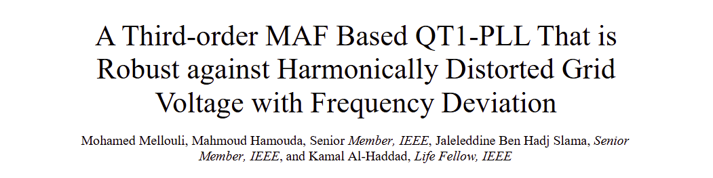

IEEE Transactions on Instrumentation and Measurement, vol. 73, pp. 1-11, 2024

Résumé : Cet article présente un algorithme de démodulation basé sur un signal retardé, capable d’extraire rapidement
et avec précision les séquences positive, négative et le DC-offset dans la tension du réseau, même en cas de
dérive de fréquence. Un formalisme simplifié est proposé pour faciliter l’implémentation en temps réel.
L’algorithme est intégré à une boucle à verrouillage de phase d’ordre trois (TQT1-PLL) pour estimer la fréquence
et l’angle de phase du réseau. Les résultats de simulation et d’expérimentation montrent que la méthode
permet une estimation précise sans ondulations, même en présence de perturbations, et offre de meilleures
performances dynamiques que les PLL adaptatives.
IEEE Transactions on Energy Conversion, vol. 36, no. 3, pp. 1600-1613, Sept. 2021

Résumé : Cet article présente la conception d’une nouvelle architecture de verrouillage de phase,
nommée TQT1-PLL, combinant un filtre MAF d’ordre trois et un préfiltre FDSC simplifié.
Cette architecture est conçue pour améliorer la synchronisation au réseau électrique
en présence d’harmoniques et de dérives fréquentielles.Validée par des simulations
et des expérimentations sur DSP, la solution proposée permet une estimation précise
de la fréquence et de la phase, sans recourir à des algorithmes adaptatifs,
tout en assurant une suppression efficace du décalage continu (DC-offset)

Résumé : Cet article présente une synthèse des récents algorithmes améliorés de boucles à verrouillage de phase (PLL)
utilisant des filtres à moyenne mobile (MAF), utilisés pour la synchronisation des convertisseurs connectés
au réseau. Ces méthodes ont montré une meilleure robustesse face aux perturbations du réseau comparées aux
techniques classiques. Une étude comparative expérimentale de quatre algorithmes MAF-PLL est menée,
testés sous différents types de défauts réseau.
Les résultats montrent que les performances varient considérablement selon la nature de la perturbation.

Résumé: Cette conférence présente une étude comparative de plusieurs versions améliorées de boucles
à verrouillage de phase (PLL) utilisant des filtres à moyenne mobile (MAF).
Ces méthodes récentes permettent de supprimer les effets des harmoniques,
du décalage continu (DC offset) et des tensions déséquilibrées.
Toutefois, elles présentent une réponse dynamique limitée à cause d'une bande passante réduite.
Pour améliorer cette réponse, de nouvelles variantes de MAF-PLL ont été développées.
Leur performance est évaluée par simulations numériques, dans cinq situations de perturbation du réseau.